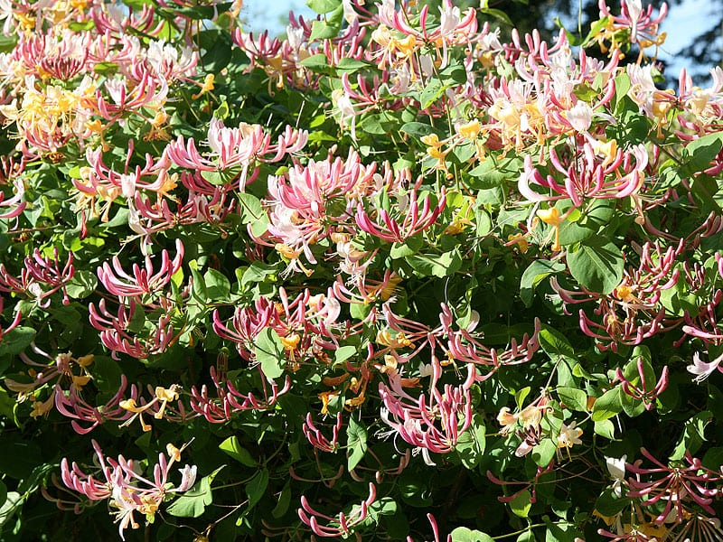
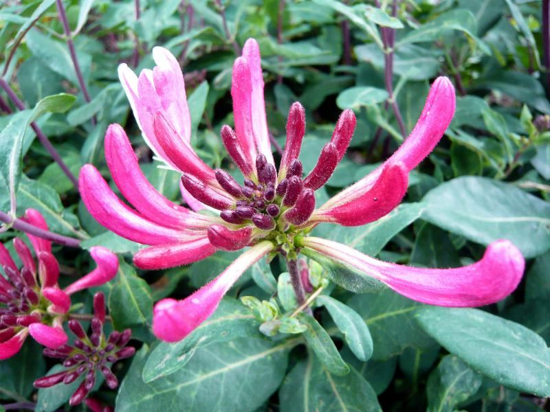

Meaning: Devotion, Affection
Origin
Victorians claimed that sleeping with honeysuckle flowers under your pillow would cause you to dream of your true love. This belief may have originated with Shakespeare’s A Midsummer Night’s Dream, in which Titania compares her slumbering with Bottom to the way a sweet honeysuckle encircles a barky elm: “Sleep thou, and I will wind thee in my arms . . . So doth the woodbine the sweet honeysuckle / Gently entwist; the female ivy so / Enrings the barky fingers of the elm. / O, how I love thee! How I dote on thee!”
Gallery

